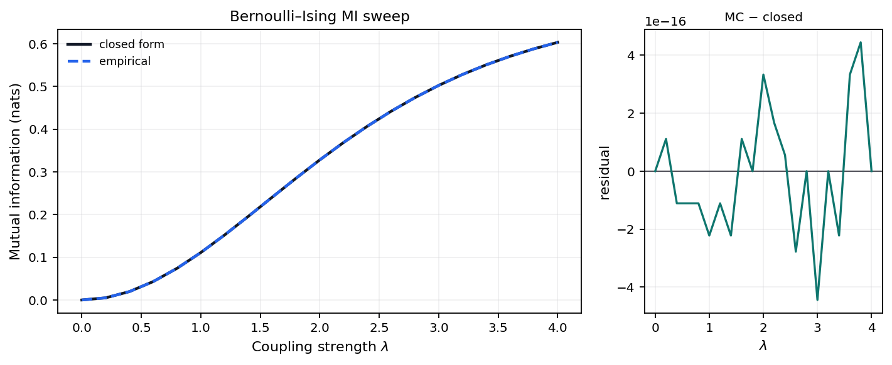
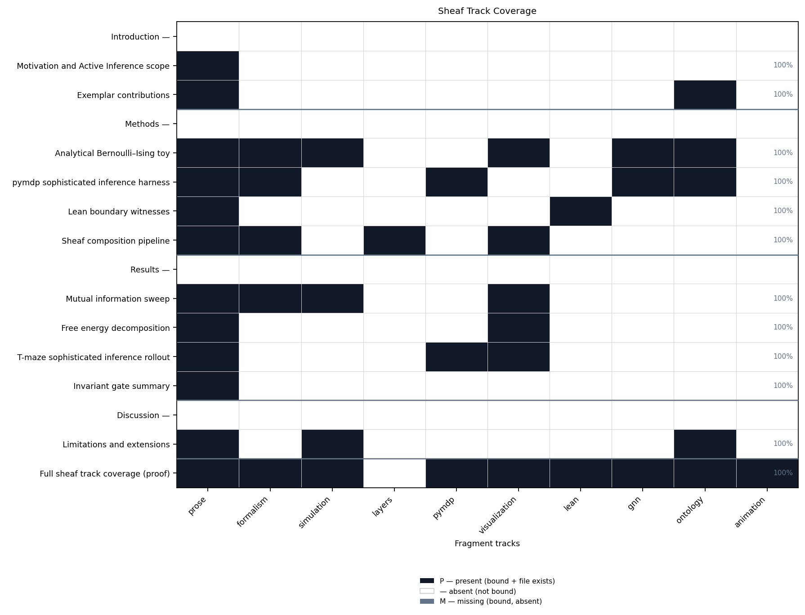

This section is the composability proof: all 9
appendix-bound fragment tracks are rendered in one flat manuscript
section. The registry defines 10 composable types; optional
layers is methods-only and excluded from this row. The
animation fragment is bound here (optional type in the
registry) alongside prose, formalism, simulation, pymdp, visualization,
lean, gnn, and ontology tracks.
For each track \(t \in
\mathcal{T}_{\mathrm{Full}}\), the manifest binds a fragment path
\(f(t)\) and the composer emits
<!-- sheaf-track:t --> before the rendered body.
\[ |\mathcal{T}_{\mathrm{Full}}| = 9 \]
The fragment registry defines 10 composable track types; optional
layers is bound on the methods sheaf section only. Optional
animation is bound in this appendix proof; the opt-in GIF
extension in tracks.yaml extension_tracks is
separate from this fragment slot.
Analytical artifacts: output/data/parameter_sweep.csv
and output/reports/invariants.json from the Bernoulli/Ising
sweep track.
pymdp harness summary: output/data/si_tmaze_summary.json
(mean belief entropy, action trace). Full log:
output/logs/pymdp_runs.jsonl.

Figure A1 (appendix). Closed-form and Monte Carlo mutual information I(λ) for the symmetric Bernoulli-Ising toy across 21 grid points up to λ_max = 4; grid maximum 0.6031 nats on the measured sweep.
Figure A2 (appendix). Discrete action index over time for the pymdp T-maze rollout (policy length 2).

Figure 4. Sheaf track coverage matrix: 16 IMRAD rows × 10 fragment columns. Black = present (P), white = absent (—), gray = missing (M). Counts: 42 present / 42 bound / 0 missing.
Lean modules under lean/TemplateActiveInference/ declare
horizon and coupling witnesses. Build with lake build in
lean/; some lemmas remain sorry by design in
this exemplar.
GNN declarations: gnn/bernoulli_toy.gnn.md and
gnn/si_tmaze.gnn.md. Ontology concordance is validated
against Active Inference Ontology bindings.
belief_entropy → BeliefEntropyexpected_free_energy →
ExpectedFreeEnergylocation → HiddenStateobservation →
ObservationLikelihoodpolicy → PolicyPosteriorsheaf_track → SheafFragmentAnimation sheaf fragment (bound in this appendix row): documents the optional registry track and points at static SI figure output.
Static frame artifact:
../figures/si_tmaze_actions.png (from the default SI
figure pipeline).
Opt-in extension GIF: run
scripts/render_animation.py to write
../figures/si_belief_trajectory.gif (placeholder loop
from the belief-entropy curve until a true frame sequence lands under
../figures/animation/).